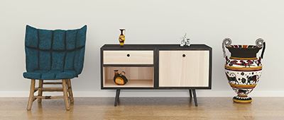

Natural Style
Nature, in the broadest sense, is the natural, physical, material world or universe. "Nature" can refer to the phenomena of the physical world, and also to life in general. The study of nature is a large, if not the only, part of science.
